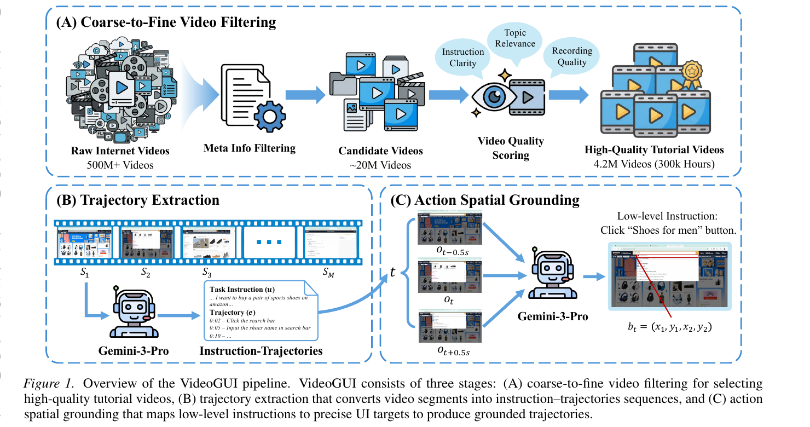
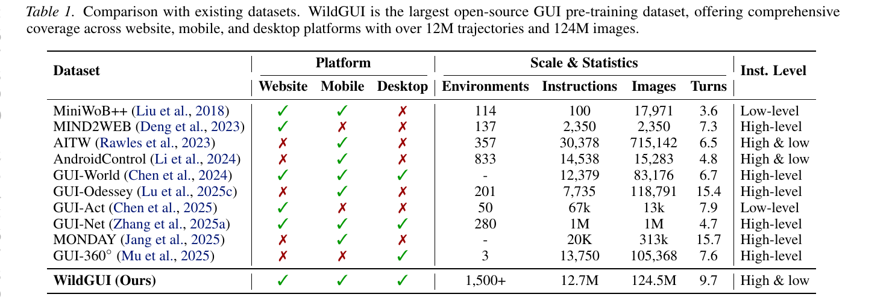
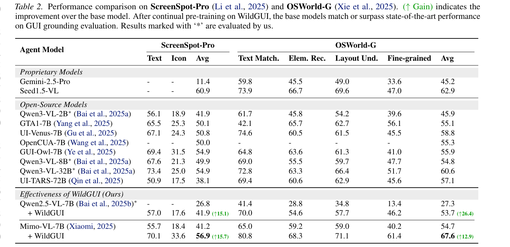
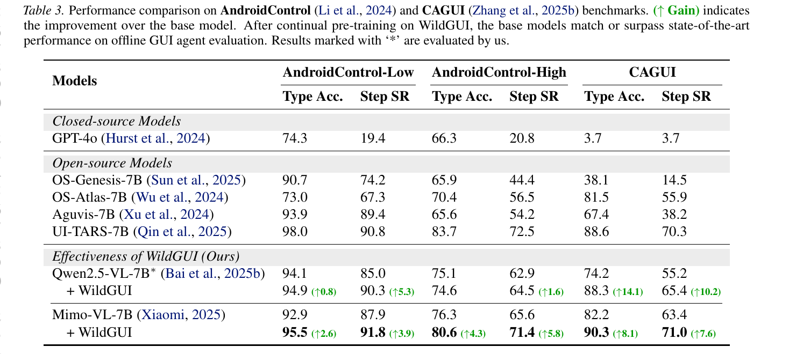
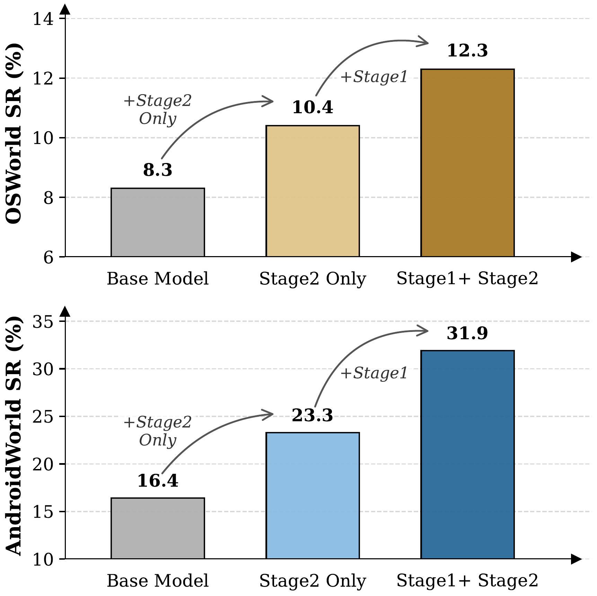
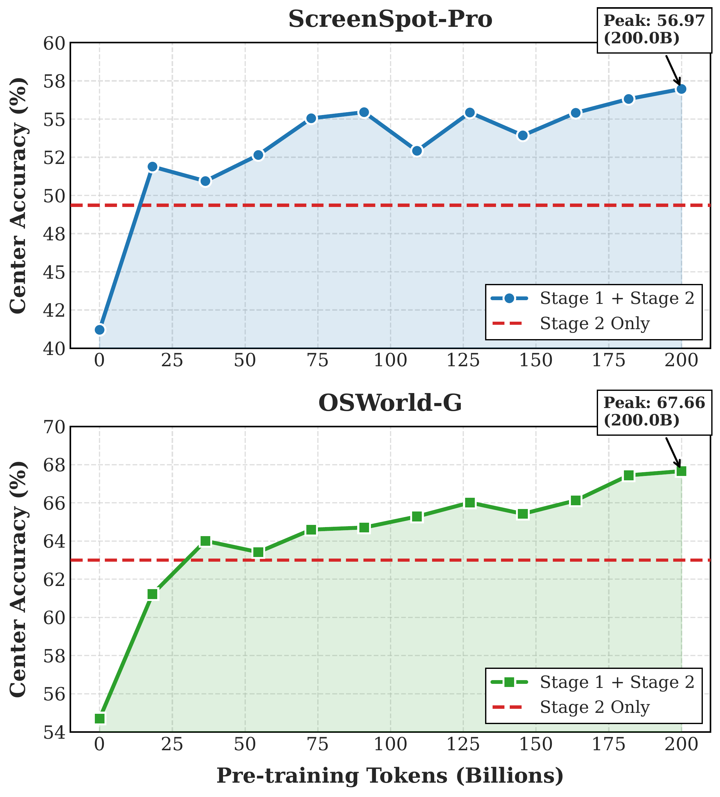

Recent advances in multimodal large language models have driven growing interest in graphical user interface (GUI) agents, yet their generalization remains constrained by the scarcity of large-scale training data spanning diverse real-world applications. Existing datasets rely heavily on costly manual annotations and are typically confined to narrow domains. To address this challenge, we propose Video2GUI, a fully automated framework that extracts grounded GUI interaction trajectories directly from unlabeled Internet videos. Video2GUI employs a coarse-to-fine filtering strategy to identify high-quality GUI tutorial videos and converts them into structured agent trajectories. Applying this pipeline to 500 million video metadata entries, we construct WildGUI, a large-scale dataset containing 12 million interaction trajectories spanning over 1,500 applications and websites. Pre-training Qwen2.5-VL and Mimo-VL on WildGUI yields consistent improvements of 5–20% across multiple GUI grounding and action benchmarks, matching or surpassing state-of-the-art performance. We will release both the WildGUI dataset and the Video2GUI pipeline to support future research of GUI agents.
Video2GUI is a fully automated, three-stage pipeline that turns unlabeled Internet videos into grounded GUI interaction trajectories suitable for pretraining generalized GUI agents.

Applying Video2GUI to 500 M video metadata entries yields WildGUI, the largest open-source GUI pre-training dataset to date. WildGUI offers comprehensive coverage across website, mobile, and desktop platforms, with over 12M trajectories and 124M images, spanning more than 1,500 applications. The table below compares WildGUI with prior datasets in terms of platform coverage, scale, and instruction granularity.

We evaluate WildGUI by continually pre-training Qwen2.5-VL-7B and Mimo-VL-7B on our dataset and measuring their performance on ScreenSpot-Pro and OSWorld-G. After WildGUI pre-training, both base models match or surpass the best open-source GUI grounding models, with absolute gains of +15.7 / +26.4 on ScreenSpot-Pro / OSWorld-G for Qwen2.5-VL-7B, and +15.7 / +12.9 for Mimo-VL-7B.

We further evaluate on the mobile-GUI action benchmarks AndroidControl and CAGUI. Continual pre-training on WildGUI delivers consistent improvements on both benchmarks, demonstrating that the trajectories synthesized from tutorial videos transfer beyond grounding to full action prediction across diverse mobile applications.

Beyond static grounding and action benchmarks, we evaluate the WildGUI-pretrained models in fully interactive online environments — OSWorld for desktop tasks and AndroidWorld for mobile tasks. WildGUI pre-training substantially boosts task success rate in both environments, validating the practical utility of our dataset for downstream agent deployment.

Performance scales smoothly with the amount of WildGUI pre-training data. As the number of trajectories grows, downstream accuracy continues to improve without saturation, underscoring the value of building large-scale GUI corpora and suggesting further gains are achievable as more videos are incorporated.

@inproceedings{
anonymous2026videogui,
title={Video2{GUI}: Synthesizing Large-Scale Interaction Trajectories for Generalized {GUI} Agent Pretraining},
author={Anonymous},
booktitle={Forty-third International Conference on Machine Learning},
year={2026},
url={https://openreview.net/forum?id=kYVjfc56RT}
}